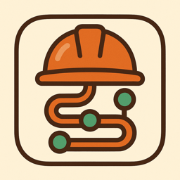

Critical Path
Cash-flow business simulator
Get it on the App Store · $2.99
Three businesses, three ways to lose money, and exactly one score that means anything across all of them: profit.
What it does
- Construction — deliver a building against a fixed budget, a hard deadline, and a crew that gets paid whether or not they have work to do
- Startup — take a company from nothing to an exit, where every round you raise dilutes you and every customer you skip acquiring never shows up on its own
- Import & Resale — buy low, sell high, and find out the hard way that cheap suppliers, big upfront orders, and heavy ad spend are usually how you lose
What you see while you play
- The Path: every piece of work on a live schedule, the critical path in lime, how many days of float everything else has, and what is setting your finish date right now
- Paid behind the work: each progress payment’s certified day against the day the money actually lands
- The cash curve: money out against money in, day by day, and the gap your own capital and credit line are carrying
Every intuitive shortcut has a real cost in this game. Profit is the only number that tells you whether you found it before it found you.